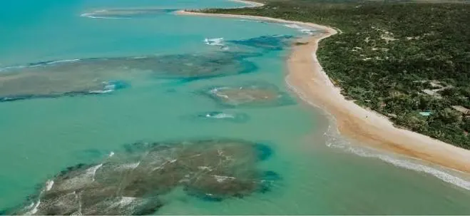
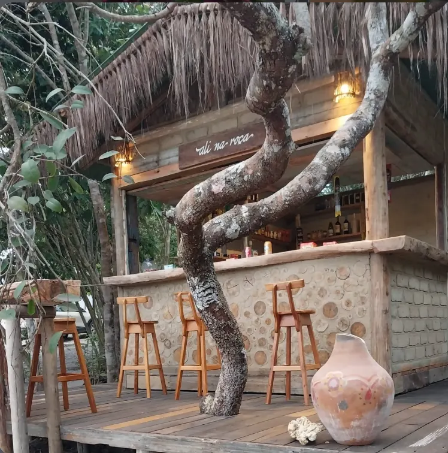
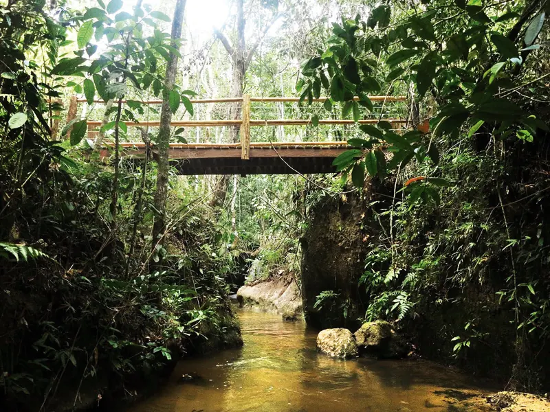
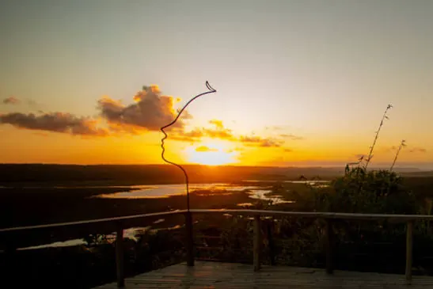
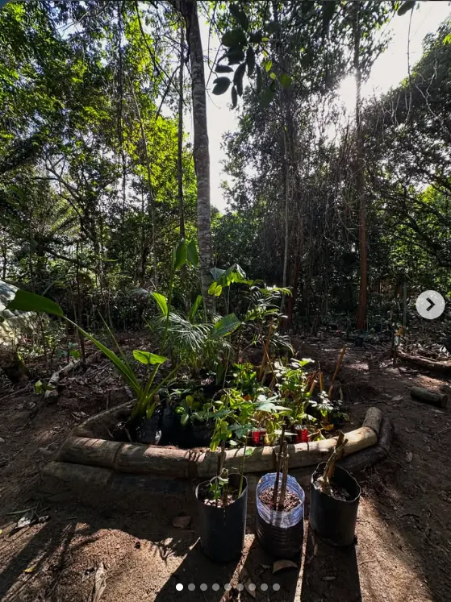

01 / ÁGUA & TEMPOMaré, areia
e caminho
Praias, caminhadas e a arte de não ter pressa.
NÃO É SÓ SOBRE ONDE IR
Natureza, cultura e encontros.
O lugar por quem vive o lugar.
Um roteiro para chamar de seu ou o apoio certo para aproveitar cada minuto. O caminho você escolhe. O território a gente conhece.
✳ PENSADOS COM CALMA
Ideias de roteiros para entrar no ritmo do lugar — e não o contrário. Todos podem ser personalizados com a equipe.
CRIAR MEU ROTEIRO ↗
01 / ÁGUA & TEMPOPraias, caminhadas e a arte de não ter pressa.

02 / SABORES & GENTESabores, encontros e quem coloca a cultura à mesa.

03 / VERDE & MEMÓRIANatureza, iniciativas regenerativas e aprendizados locais.
Roteiros conceituais do protótipo: atividades, acessos, parceiros e disponibilidade sujeitos a confirmação.
✳ DO PRIMEIRO OI ATÉ A VOLTA
Você vem viver. A gente ajuda a conectar os pontos.
PEDIR UM ORÇAMENTO ↗✳ PORTAS QUE VALEM ABRIR
O guia independente do ONDÊ reúne cantinhos, histórias e experiências que fazem sentido para quem quer conhecer mais do que o cartão-postal.
Uma seleção inicial do catálogo-piloto ONDÊ. Fotos ilustrativas. Consulte condições de visitação e disponibilidade.
QUERO UMA DICA PERSONALIZADA ↗
✳ O QUE NOS MOVIMENTA
Este espaço cresce com as nossas histórias. Enquanto organizamos os cases, conheça referências do território e a curadoria que deu origem ao ONDÊ.

20 experiências para descobrir Trancoso além do óbvio.
A Nova Floresta é uma iniciativa apresentada como referência no guia-piloto; sua presença aqui não pressupõe parceria ou serviço comercial confirmado. O portfólio definitivo dependerá dos cases autorizados.
UM JEITO MAIS PRÓXIMO DE VIAJAR
O ONDÊ nasce da vontade de conectar pessoas a experiências que respeitam o território e valorizam quem faz parte dele. Um guia independente e um ponto de encontro para novas formas de conhecer Trancoso.
Menos turismo automático. Mais presença, cultura, natureza e boas conversas.
VEM CONVERSAR COM A GENTE ↗✳ CONTA O QUE VOCÊ IMAGINA
Conta um pouco da viagem. A gente prepara sua mensagem para começar a conversa no WhatsApp.